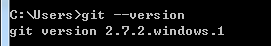
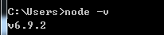
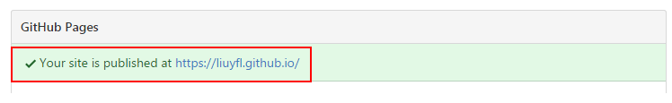

环境准备
本文环境:win7-64git-2.7.2-64
nodejs-v6.9.2-x64
1、安装git
下载git安装，并确认已在环境变量中配置git路径

2、安装nodejs
安装nodejs，一直选择next即可

hexo安装
在命令行终端输入:npm install hexo-cli -g该命令执行时间会比较长，如果失败可以百度搜索淘宝npm镜像，换成cnpm install hexo-cli -g命令执行(以下npm命令都可以替换成cnpm)
配置hexo
选择博客根目录，cmd进入该目录下，执行:hexo init [目录名称] 例如:hexo init myhexoblogcd进入myhexoblog文件夹，执行:npm install
目录下的_config.yml是博客的配置信息，可以在此配置一些参数信息
启动服务
|
|
生成静态文件
|
|
下载主题(主题可在hexo.io上预览查找)
|
|
下载完成后在_config.yml中修改theme: landscape为你的主题名称(注意:theme冒号后面有个空格)
修改后清除缓存和静态文件
|
|
发布github
hexo博客内容生成静态文件后可以发布到github上首先，注册一个github账号(如果已有账号，请忽略)
创建后登陆进去点击右上角的New Repository创新一个新的版本库
在settings中修改版本库名称，建议修改成注册名称+github.io,其他的名称好像会失败

修改成功后在settings页面的GitHub Pages可以看到类似信息

上传博客文件到github上
|
|
|
|
注意:如果直接在cmd下执行hexo d会出现错误，发现无法提交，要选择用git bash来执行部署指令